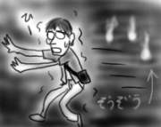
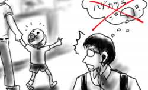
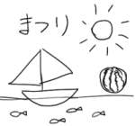

手足にジンマシンが出ました。
同じものを食べた家族には全然出ていないようですし、考えられる理由と言えば、うどん国の障気くらいでしょうか。そういえばこっちに帰って来たら体がなんだかだるいなあと思っていたんですよ。さすがオカルト大国ですなあ、などと見当違いな感想を抱いたりしながら、一日中ゴロゴロしてました(最低)。
体がうどん国に拒絶反応を？
手足にジンマシンが出ました。
同じものを食べた家族には全然出ていないようですし、考えられる理由と言えば、うどん国の障気くらいでしょうか。そういえばこっちに帰って来たら体がなんだかだるいなあと思っていたんですよ。さすがオカルト大国ですなあ、などと見当違いな感想を抱いたりしながら、一日中ゴロゴロしてました(最低)。
体がうどん国に拒絶反応を？
今日も、実家の友人達と夕飯を食べに出かけました。
最初は和食なんてどうか？という話をしていたのですが、コストパフォーマンスが悪いことが分かるや否や、即座に坦々麺に切り替える意志決定の早さは素晴らしい。こちらはコストパフォーマンスよすぎだ。
帰りがけに本屋に寄るのも、僕の友人達なので当然と言えましょう。うどん国最大手の本屋チェーンは本の揃えが悪いことで有名で、漫画の単行本などでも棚に並んでいるのは、2,2,3巻とか、3,4,5,9,10巻とか、買おうと思っても買い集められない状態で、そのくせキャッチコピーで「本なら何でも揃う」ことをうたっており、ムカつき度も天井知らずなのです。設置面積が広いくせに、棚が低くて在庫も少なく、お前らは本当に本を売りたいのかと問いつめたい感じです。高校時代はよく苦しめられました(漫画が揃えられなくて)。
そんな思い出話を取り入れながら、散々品揃えの悪さを小馬鹿にして脱出(最悪)。
帰宅時に一人でふらふらと母校になる小学校に不法侵入してみました(出来心)。通常は、あんなに広かった運動場も大人になって見ると狭いもんだなあと思うものですが、実際は、運動場がバカみたいに広くなってました。どうやら運動場周りの植え込みも、大きな遊具も全て撤去されてるみたいなのです。遊具はシーソーと登り棒とブランコとすべり台しかありません。ちびっこは、こんな状態でどうやって遊んでいるのか。
などと、いらぬ心配をしていたのもつかの間、校舎は真っ暗やみにほのかに浮かび上がっており、学校の怪談を思い出したのでさっさと退散しました(恐がり)。
この夏一番の猛暑の中、実家へと帰って来ました。
空港へは父親が迎えに来てくれたのですが、帰りの車内では何故かCDで喜多郎が流れ続け、妙に感情的でせつないBGMのせいで、ほとんど会話は０でした。よりによってこんなBGMにしなくてもいいじゃないか、父さん！
父親は、さすがに沈黙に耐えきれなくなったのか、家の近くまで来てようやくBGMをFM放送に切り替えました。一時はどうなることかと。
夜は実家の友人達とファミレスでだべっていたのですが、相変わらず実家方面のファミレスの高価値ぶりと、そこに群がる人の大軍にはびっくり仰天(死語)！駐車場が埋まり切っています。たかだかガストでこれですよ！
そして、だべっているとどこからともなく花火の音が聞こえて来ました。昨日に引き続いて今日もですか(場所が違います)。しかし店内からは全く花火が見えず、音だけだとうるさいだけだなあと今さらながらの感想を持ちました。言うなれば「夏と花火と私の死角」です(無理矢理)。
実家へタブレットを持ってくるのを忘れたので、実家の友人に借りるまでは絵はなしということでお願いします(誰にお願いしているのか)。
ここのところ仕事が差しせまっており、日付けがインクリメントされる時刻あたりに帰宅していました。下手すると今日もそんな感じかなあと思っていたのですが、週末の停電に備えて部内サーバーが停止されるので早めに抜け出すことが出来ました。たまには停電もいいネ！仕事は微妙に中途半端になりましたが、仕方ありません。
早めに会社を出たので、久しぶりに「斑鳩」をやるため(トレジャーの公式攻略ムービーを見返して感化されたから)にゲーセンに向かっていると、どこからか花火が上がっているではありませんか。
サーバー停止がなかったら「夏と花火と私の仕事」という感じでジャンプホラーノベル大賞受賞だったのですが、そうはならなくて残念です(夢見がちに)。
世界で一番きれいな写メールを目指したのですが、光量不足と望遠のなさはどうしようもなかったです。というか全然ダメだ。
バタバタとしますが、明日からちょっと実家に帰省してきます。
いつの間にやら夏休みで、僕がふらふらと会社に出て行く時間には、小学生達が外をうろついて遊んでいたりします。僕の出勤時間は、小学生にとっては普段なら授業中のはずですから、すぐに分かります。
今日は出勤中に、小1くらいの男の子がおじいちゃんに手を引かれてこちらに歩いて来るところを見かけました。よく見ると男の子は、肌色で半球型のプラスチック製の物を頭に被っています。こ、これは噂の「禿げカツラ」ではあるまいか。こんな小さな男の子が何故そんなに「禿げ」にあこがれているのか。n 代目まるこめ君を目指しているのだろうか。どこに売ってるんだろう。先日のお祭りで「禿げカツラ」屋台でも出ていたのだろうか。様々な疑問が沸き起こって来ます。おじいちゃんは立派な白髪を生やしているのでその対比もおもしろく、ついつい見つめてしまいました。
すれ違いながらも目を離せず、ついつい振り返って見てしまったのですが、そこでようやく男の子が頭に被っているものが「禿げカツラ」ではなくて、「アンパンマンのお面」であることに気付いたのでした。
…ガッカリだよ。
祭りが終わったので、子供達が書いたポスターも撤去されました。どうせなら夏の太陽輝く間は貼っておけばいいのに。「まつり」と字で書かれている割には、ポスターには「ヨットと海とスイカ」の絵が描かれていて、全然お祭り関係ない。祭りと夏休みの区別がついてないよ！という感じの小学生ならではのアシッド感覚あふれる様は結構おもしろかったのに残念です。
そんな小学生ならではのアシッドさを、いい年をした大人が完全再現してしまった今週の少年ジャンプのうすた京介『ピューっと吹くジャガー』は相当に爆笑ものでした。小学校時代に新聞係となり、学級新聞に脳みそゆるゆるの４コマ漫画(おならと爆発が頻出)を書き連ねていたような人間にはかなりヒットすると思います。昼休みに立ち読みをして、肩を震わせて笑いをこらえていたのですが、その笑いは昼休み後の昼礼時にもまた抜けてなかったというのは我ながらヤバい。
昨日の補足ですが、日中の照りつけもあって喉が乾いて仕方なかったので、駅についてすぐに自動販売機でジュースを買おうとしたのです。小銭が足りなくて仕方なく1000円札を投入したところ(夏のお札だから)、自動販売機はうんともすんとも言わなくなりました。ボタンを押しても何も出てきません。発車時刻２分前のことです。
急いで駅の売店に駆け込むと「今日は業者が休みなんで、明日業者に連絡して取ってもらうので連絡先を教えておいてもらえますか」とか何だかすっとぼけたことを言われました。仕方なく住所と電話番号と名前を書いて渡すと、「今日はもう貼紙しておきますから」と売店のおばちゃんはふらふらと自動販売機のところへ移動していきます。僕も「その手で1000円札を返してもらえないものかなあ」と思いながら、おばちゃんの後ろをついて自動販売機のところへ戻ります。しかし、ちょうど自動販売機手前まで来たところでホームへ電車が滑り込んできました。「あ、電車来ちゃったんで、連絡よろしくお願いします」と言い残して電車に乗り込みました。おばちゃんはこちらを振り向いて「貼紙しておきますからー」と言いました。
そこは「明日連絡しますからー」の間違いじゃないのか。今さら貼紙されてもちっとも嬉しくありません。
明けて今日ですが、やっぱり連絡はありませんでした。1000円札を奪われたうえに個人情報まで教えて、こちとら慈善事業じゃないんだ！(帽子を地面に叩き付けながら)
P.S.
その後、乗り換え駅のコンビニで急いで買った飲み物は、恐ろしいくらいに冷えてませんでした。ここのところ、水難事故が多い(用法間違い)。